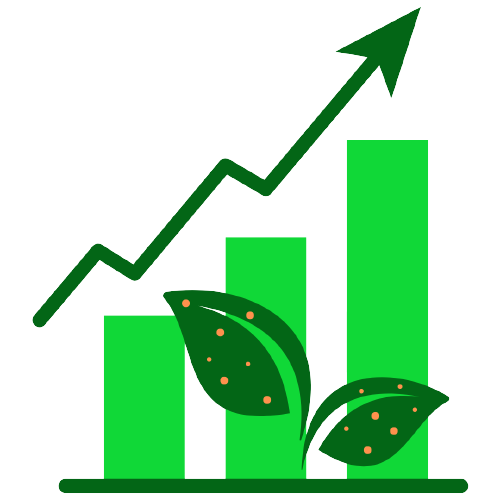

Olá, seja bem-vindo!
| Que bom que chegou. Eu me chamo Dyênici, é um prazer te ter aqui!! |

Sobre mim Engenheira Agrônoma pelo Instituto Federal de Educação, Ciência e Tecnologia do Espírito Santo - Campus Santa Teresa. Atuei como estagiária voluntária no Laboratório de Diagnose de Doenças de Plantas do Campus e fui bolsista de iniciação científica do Conselho Nacional de Desenvolvimento Científico e Tecnológico (CNPq) de 12/2019 a 08/2022, trabalhando com a resistência de 47 genótipos de Coffea canephora ao parasitismo por M. paranaensis e M. exigua, sob orientação do professor Antônio Fernando de Souza. Fui indicada ao 19º Prêmio CNPq - Destaque IC, na categoria Bolsista de Iniciação Científica: Ciências da Vida. Atualmente sou aluna do mestrado em Fitopatologia (Capes 7) pela Universidade Federal de Viçosa - Campus Viçosa, e atuo no Laboratório de Controle Biológico de Fitonematoides (BIONEMA), dentro do Instituto de Biotecnologia Aplicada à Agropecuária (BIOAGRO), sob orientação do professor Leandro Grassi de Freitas. |
Sobre esse site A proposta desse website é disponibilizar as aulas que foram ministradas na disciplina FIP 606 - Análise e Visualização de Dados em Fitopatologia, da Universidade Federal de Viçosa, pelo professor Emerson Medeiros Del Ponte. Espero que aproveite o conteúdo!! |
 |